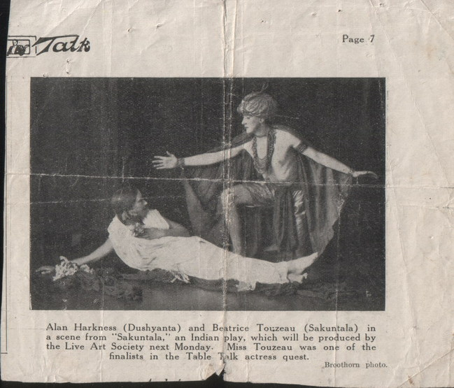
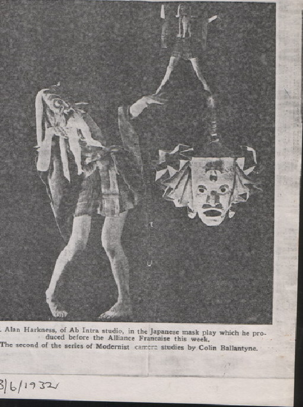
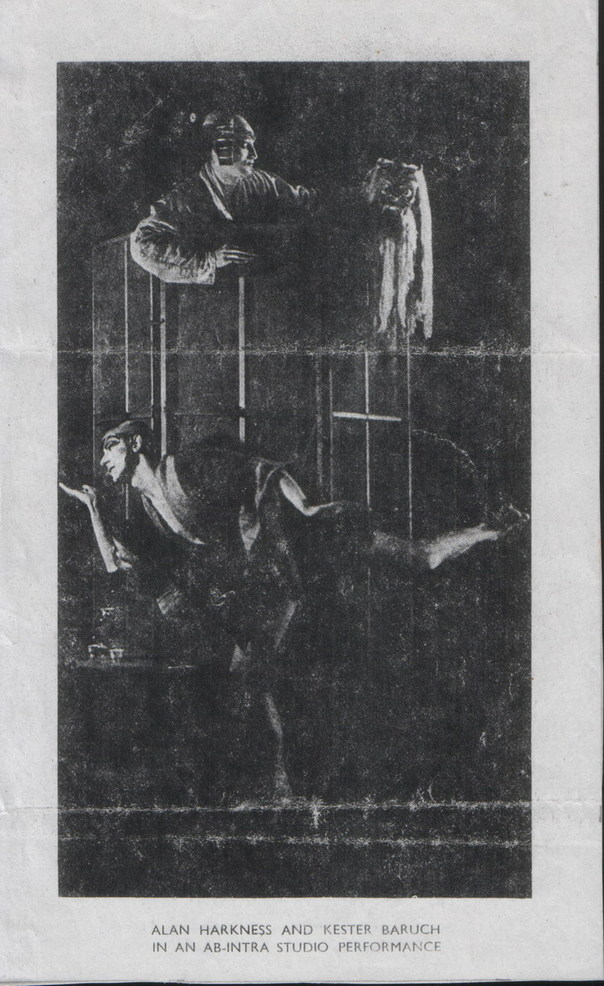
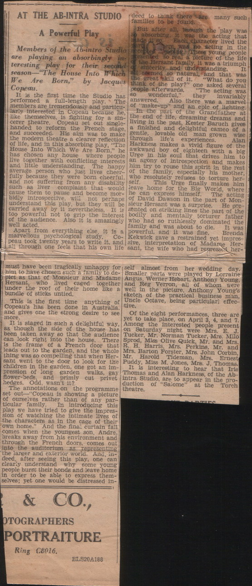
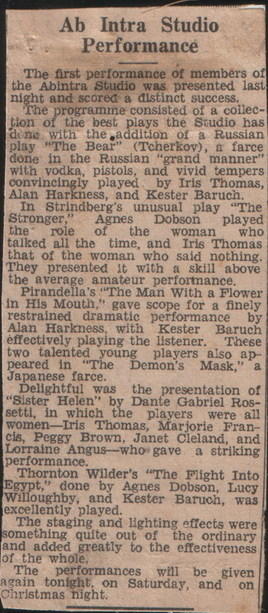
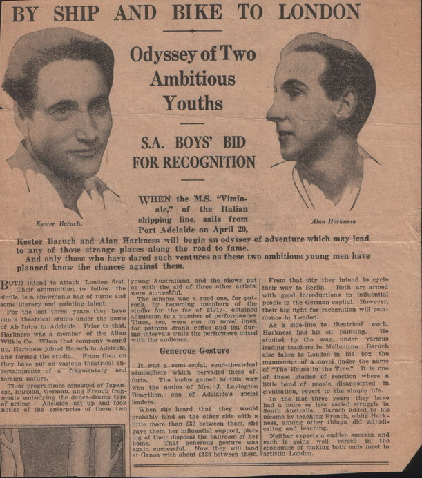
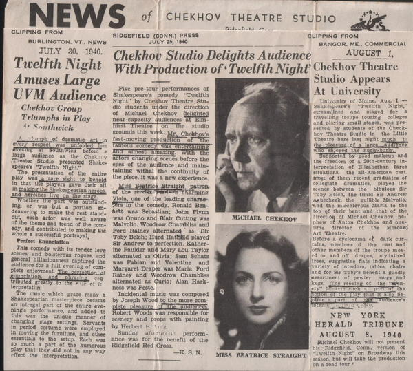
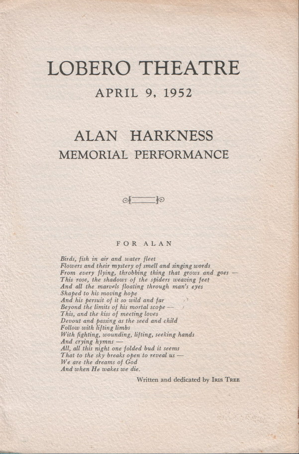

Ab-Intra Studio Theatre
Ab-Intra Studio Theatre in Adelaide, 1931–1935. Ab-Intra Studio Theatre was inventive, experimental and probably the most genuinely creative of all the little theatres in Adelaide during the 30’s decade. Its distinguishing characteristics were an emphasis on the importance and beauty of visual communication with an audience, and highly individual methods of production. Although it existed for only three years, Ab-Intra made a singular and lasting impact on those associated with the work attempted by the two founders of the theatre.
Ab-Intra came about by the chance meeting in Adelaide of Alan Harkness and Kester Baruch, who had gone separately to the Theosophical Society’s Sunday evening meeting on the ground floor or foyer of a building in King William Street South. Alan Harkness (1908–1952) was born in Northam, Western Australia, and in 1925 he had briefly attended the National Gallery School in Melbourne before studying privately with the artist Archibald Colquehoun. During this time he developed an interest in theatre design and production, and acted with the Live Arts Society. After favourable press notices early in 1928 he was invited to join the professional Allan Wilkie Shakespeare Company, and was in Adelaide touring with this organisation at the time when he met his future co-director. He was fair-headed, slender, aesthetic, with a certain transcendental yet elusive personality. He was the visionary and the innovator.

Read the clipping text (OCR)
Far Talk, Page 1 — Alan Harkness (Dushyanta) and Beatrice Touzeau (Sakuntala) in a scene from “Sakuntala,” an Indian play, which will be produced by the Live Art Society next Monday. Miss Touzeau was one of the finalists in the Table Talk actress quest. Broothorn photo.
Kester Baruch (1903–?) was dark haired, of stocky build, a freelance journalist and writer. Adelaide born, he became a reporter on the Mail and later moved to Sydney. He returned to Adelaide not long before his meeting. The two men found that they liked each other and had a great deal in common, with interests in theatre, words, interpretive movement and mime. There was a mutual recognition that a new approach was needed in theatre, in production and pictorial presentation.
The following year the financial Depression caused the Allan Wilkie company to disband. Kester Baruch wrote to Alan Harkness suggesting that they start an experimental theatre in Adelaide, in a very modest way to begin with, as neither of them had any money. Harkness would have control over production, acting, visual presentation — the more creative side. Baruch’s contribution would be mainly literary and technical; he would take charge of lighting, properties, scenery. Because of the depression, they were able to rent the whole of an empty building on North Terrace for a few shillings a week. There they began rehearsing and discussing the theories of overseas experimental theatre with some of the imaginative and creative young people of Adelaide. They had elected to call this type of work, Ab-Intra, meaning ‘from within’. They explained that it was ‘from within oneself’ that the reality or strength of their work must come.
Alan Harkness’s training in the visual arts gave him a particular interest in movement, mime, pattern, colour and light rather than dialogue, which he described as literature adapted to the stage. In 1932 Kester Baruch wrote: ‘… there was no end to the scope for creating visually, orally, mentally, emotionally and atmospherically the inner content of a play. Perhaps in echoing the opinion of Gordon Craig one is inclined to say that the time will come when dialogue, when we know it, will be of the least importance, the plays will reveal themselves and talk to one in a universal language, which has nothing to do with the written or spoken word.’ The expression, the inner content of a play and the assertion that ‘the inspiration must come from within’ in the creation and portrayal of a character, were repeated over and over by both men. Harkness felt that the type of play they were looking for might be found in Oriental rather than European theatre. He discovered Arthur Waley’s translation of a short Japanese play, The Demon’s Mask, which had only two characters in it. They began rehearsals, and Alan Harkness made for himself a fantastic, frightening mask.

Read the clipping text (OCR)
Alan Harkness, of Ab Intra studio, in the Japanese mask play which he produced before the Alliance Francaise this week. The second of the series of Modernist camera studies by Colin Ballantyne.
Kester Baruch later wrote in an Ab-Intra newsletter: ‘The construction allowed for a more direct expressionism than in most other types of plays… Unfortunately for Western minds the Noh play was full of references to the beliefs and customs of its time, also the Noh was deficient in the logical-mental structure which the Occidental mind insisted on.’ Harkness and Baruch agreed that an interpretation, while preserving the Noh tradition, would be more comprehensible to their type of audiences than total adherence to the original play, so this was how the production was presented. In this play, a journey by two priests set the atmosphere and the circumstances of the story; it also stimulated the imagination and prepared the audience for the central theme. The two priests used their staffs as oars to row through the darkness of the auditorium; they told their story as they went. The production was presented at the Mina Bauer studio in Leigh Street on 23 December 1931. Bauer was a dancer who had recently returned from America where she had made a film on interpretative dancing dedicated to the life of Isadora Duncan; she was one of a number of Adelaide artists who were interested in the ideas being expressed by Ab-Intra. On 16th January 1932 The Adelaide Mail gave double-page space in their magazine section to Ab-Intra, with photos of the two founders. The article argued that Ab-Intra was mainly ‘a group of artists who were struggling for a more intelligent type of theatre and may some day be a force in Adelaide.’ Alan Harkness asked the Press to make it clear that the group had no wish to revolutionise the theatre; they were merely trying to bring something different before the public. If they failed they would at least have had the satisfaction of having tried hard. If they succeeded their dreams would have been realised.
Feeling the need for a small theatre space of their own, Ab-Intra moved into new premises at 354 King William Street South. It had been a large draper’s shop, another victim of the Depression. The Theosophical Society had used the ground floor for their meetings, and it was here that the two young men had originally met. The rent was nominal, and they were able to improvise living quarters plus a workshop in the empty upstairs showrooms. They turned the larger room into an area for productions and rehearsals. With the aid of black hessian curtains plus a few wooden structures, it became a small theatre without proscenium, thus with no separation between players and audience. The larger downstairs area on the ground floor became a kind of foyer where coffee was served during intervals.
Because of the success of The Demon’s Mask, Ab-Intra decided to expand this into a full-length programme of Japanese works — not to produce them in the style used by the Japanese actor but rather as in The Demon’s Mask, to interpret them according to their own theories. This plan took eight months of concentrated, constant preparation and rehearsals before the program, called The Robe of Yama, was ready. In the interim period several club evenings were arranged in the Ab-Intra studio. The first, in June, was a private performance for Dame Sybil Thorndike. Her company had come to Australia to play in Bernard Shaw’s St. Joan and also Macbeth. Dame Sybil, her husband Lewis Casson, and others attended a special performance of some sections of The Robe of Yama program after their own evening performance at the Theatre Royal. The Thorndike company had just previously played a season in Japan, giving them a particular interest in the Japanese production. Dame Sybil was enthusiastic and helped in a practical way by referring to the Ab-Intra production at various functions in Adelaide. She also asked Harkness and Baruch to keep in touch with her. Bruce Winston and Albert Chevalier, actors with her company, spent a great deal of time at the studio, and Winston rehearsed the group and advised on Japanese farces. He designed and cut out material for a kimono, and made a spectacular head-dress worn by the actress, Thelma Thomas, for her part in Woman’s Song. He also gave a length of Japanese brocade for an obi to complete the costume.
Following is a copy of a letter (undated) from Dame Sybil Thorndike:
Dear Mr. Baruch,
Your interesting letter has been left too long unanswered but I have so little time and letters are so overwhelming, so you will forgive me I am sure. I am delighted that the start has been so good. You are such keen artists and are willing to live poor, so that you may work at the things that are worthwhile and I do feel that you stand for something. I don’t believe we actors — we who are keen on the hard unrelenting work — will ever make fortunes, but we have got payment in the joy of doing it. I wish you every good thing, don’t get discouraged if things go poorly. If you hold on and succeed you will be such encouragement to a lot of us. Your work is full of beauty and is original and you have no lack of ideas — and ideas beget ideas, so go ahead and bless you all. We are working frantically — just produced Medea. Wish we had done it in Adelaide. Hope we shall see you again — keep in touch with us.
Sincerely yours,
Sybil Thorndike.
On 13th August, 1932, Ab-Intra presented the full program The Robe of Yama. Music had been especially written by the Adelaide musician Spruhan Kennedy, using flutes, gongs, bells and drums. When presented to the public it caused a small sensation, for nothing like it had been seen before in Adelaide. It proved to be a production of exceptional visual beauty. The critics extended themselves both in their praise and the space they devoted to their reviews.
In both the Noh and the Kiogen farce the productions were complete in themselves… there was a combination of stylised acting, voice control and gestures, which in themselves conveyed practically all the meaning of the play. The words could be in any language on earth and the plays could still be understood and appreciated. Alan Harkness showed his unusual acting ability… His speaking voice was delightful, the energy and enthusiasm which he managed to instill into the smallest look or gesture went a long way towards the general success of the programme… In Woman’s Song, Thelma Thomas did fine work, she was another performer whose work was invaluable to the studio, and whose every appearance was notable for the realism which she gave to her parts. — Town Topics, 19 August

Read the clipping text (OCR)
ALAN HARKNESS AND KESTER BARUCH IN AN AB-INTRA STUDIO PERFORMANCE
In a further article a week later, Douglas Loan, the editor of Town Topics magazine, a sympathetic supporter and a valued friend to these young performers, devoted several illustrated pages to The Robe of Yama program:
Just as the poet strives for harmony and rhythm in his lyrics, so do the Ab-Intra members strive to express their action in rhythmic movements. Every little gesture is pregnant with symbolism, every movement of the finger is a lyric poem in itself. True drama to them is more than scintillating dialogue and gorgeous scenery for true drama must come from within… The writer was privileged to attend an Ab-Intra production, The Robe of Yama, recently. But he neither came to scoff nor remained to pray. The sheer plunge into the icy waters of unorthodoxy left him breathless, but the ice was broken eventually. Here in the heart of Adelaide, the lambent flame of culture burns untroubled by the draughts of passive intolerance created by the public… The mind no longer ached with the glittering lights and the glittering dialogue of the theatre, but was content with the shadowy stage and the soft voices. The husky voice of Thelma Thomas and her dryad grace wove a magic spell around one… In every gesture of Alan Harkness there was something deeper than mere movement, something that fitted into a subdued mosaic pattern. And strangely, the whole result was neither a fantastic design nor a grotesque creation. The pattern was infinite. It stretched away down the dim vistas of the mind, its definition elusive infinity. Yet Ab-Intra Studio is not a hot-house of fanatics to be visited by sightseers and pseudo intellectuals. Whatever be its faults — and there are many — it cannot be fairly accused of being a ‘stunt’… On the delicate wax of the mind will be impressed the thoughts that are begotten by the plays. Appreciation is almost sub-conscious at the time, one claps automatically and goes out into the night rather disturbed…
In September Ab-Intra produced its fourth program; notable because Robert Helpman played with them. He was then a likable, kind, generous and witty young man, and was staying in Adelaide with his family after finishing a season with J.C. Williamson’s Margaret Rawlings–Gabriel Toyne company, and before leaving Australia with them for London. For Ab-Intra he devised a short series of dance postures, The Stained Glass Window, and performed them with Thelma Thomas. Also on the program were three short Thornton Wilder plays and Winifred Shaw’s The Aspen Tree, performed by Thelma Thomas, Alan Harkness and Robert Helpman. The last was a mime representation of an apocryphal incident in the life of John the Baptist, in poem form. Another dramatic vignette acted by Robert Helpman was The War is Over, a tense little drama set in the trenches in World War 1. It was the first time Adelaide had seen him in a straight part and even then he proved he was as good an actor as he had already proved himself to be a dancer.
On 21 October the Adelaide University magazine, On Dit, advised all students who were interested in drama that they should make it their business to see an Ab-Intra performance: ‘The Ab-Intra Studio brought to the production of their shows fresh keen minds, a great deal of enthusiasm and unmistakable sincerity… They decidedly have ideas about acting, and make their performances vivid and convincing.’ At the same time the Australian painter, Hans Heysen, wrote to the studio in appreciation of their work. On the back of this letter was added a P.S.: ‘Would you accept three new members, my wife, myself and Nora, for whom I am enclosing a cheque.’
The last production for 1932 was a Christmas Night of Fulfilment, which opened on 15 December. Apart from the usual run of six to eight performances, this program played two extra shows on Christmas Eve, one at 8pm and one at 11.30pm. The Express and Journal reporter (31/12) wrote that in Adelaide it was intriguing to start off a show at the hour when most people were going to bed. The reporter confessed that while she only half understood the aims of the studio, she was content to accept them and to enjoy their productions. She found the Christmas offering was ‘like turning the leaves of an old vellum paged book, and finding on each one a coloured print, the vellum fine and the colours mellow.’ This program consisted of four plays: Sladen Smith’s The Crown of St. Felice; the medieval Second Shepherd’s Play; Night of Fulfilment by Walter Pate; and The Flight into Egypt by Thornton Wilder. In this last, Hepzibah the donkey was acted by Maytie Helpman, mother of Robert, with the help of an ass’s mask made by Alan Harkness. Kester Baruch was more creatively active in the preparation of this season, acting in several of the plays and directing Night of Fulfilment. A reviewer in the News (23/12) wrote:
… more amazing than the quality of the dramas that Ab-Intra produced was the enthusiasm of the audience and the energy of the players, which alone allowed them to triumph over the difficulties of their theatre. There were no footlights and no proscenium, but spot-lights conceived by Kester Baruch, flung their beams across the heads of the audiences. The seating consisted of chairs, form, benches, tables and cushions on the floor. But very similar circumstances must have attended the very earliest production of some of the nativity plays used in this Ab-Intra programme — of medieval dramas with angels and shepherds, with their bluff humour and Biblical significance.
In 1933 Ab-Intra produced five shows. One of these productions was in association with Heather Gell, who introduced Dalcroze Eurythmics to Adelaide. Both Alan Harkness and Kester Baruch admired her work, which was in many ways analogous to their own theories. Ab-Intra and Heather Gell collaborated to produce the third 1933 program, called Plastic Interpretations, which opened on 23rd June. The reviews were again good:
Heather Gell’s Dalcroze plastic interpretations as arranged to music were a delight, they were pure and simple, a series of spontaneous movements with girls in close-fitting navy tunics… Debussy’s The Girl with the Flaxen Hair took one’s breath away and completely satisfied one’s colour sense… The Girl, Shirley Stevens, had flaxen plaits three to four feet long that swayed in rhythm to the music… She wore floating draperies of cerise silk and rose from a couch draped with shot silk and rose… Prelude to the Afternoon of a Faun was perhaps the most important number, certainly arresting. The Fauns were Alan Harkness and Kester Baruch… dressed as seen in old prints… Hair was quite a feature, the nymphs had fascinating long hair made of glossy embroidery silks, parakeet green, very pale blue streaked with corn colour, or green streaked with rose. They wore draperies of blurred purple, mauve and dull rose… It was a beautifully performed number… The setting too had trails of vivid green leaves, with just a touch of pale yellow and a glint of red. — Express & Journal, 8th July
The 1934 year began in March with a production of Jacques Copeau’s The House Into Which We Are Born. Alan Harkness wrote to Copeau, receiving a warm letter congratulating Ab-Intra Studio on ‘your courageous work in a distant country.’ The play was about a house where people lived with conflicting interests and little understanding; programme notes for the Ab-Intra production stated: ‘The characters are drawn with an intimacy that makes them speak with the awkward, but eloquent pauses and hesitations of real life… In their place are the furtive glance, the tearless sob, or the overtones of a commonplace phrase.’ Ab-Intra tried to give the impression of watching the intimate lives of the characters as in the cage of their own home, and when one of them broke away from his environment, he came out into the auditorium as representing the larger and exterior world.

Read the clipping text (OCR)
AT THE AB-INTRA STUDIO — A Powerful Play. Members of the Ab-Intra Studio are playing an absorbingly interesting play for their second season — “The House Into Which We Are Born,” by Jacques Copeau. It is the first time the Studio has performed a full-length play. The members are tremendously and particularly interested in Copeau because he, like themselves, is fighting for a sincerer theatre. Copeau set out single-handed to reform the French stage, and succeeded. His aim was to make the modern theatre a clearer reflection of life, and in this absorbing play he has chosen any house where people live together with conflicting interests and little understanding… It is too powerful not to grip the interest of the audience. Also it is amazingly well acted. Apart from everything else, it is a marvellous psychological study… This is the first time anything of Copeau’s has been done in Australia, and gives one the strong desire to see more. It is staged in such a delightful way, as though the side of the house has been taken away so that the audience can look right into the house… In the part of the Grandfather at the end of life, dreaming dreams and living in the past, Kester Baruch gives a finished and delightful cameo of a gentle, lovable old man grown wise through life’s experiences. Alan Harkness makes a vivid figure of the awkward boy of eighteen with a big urge in his soul that drives him in an agony of introspection and makes him try to rouse this spirit in the rest of the family, especially his mother, who resolutely refuses to torture herself. The acting of David Dawson in the part of Monsieur Hersant was a surprise — powerful, and it was fine. Brenda Kekwick gave a restrained yet impressive interpretation of Madame Hersant. Smaller parts were played by Lorraine Angus, Werner Hebart, Anthony Young, and Reg Verron, all of whom were well in the picture. It is interesting to hear that Iris Thomas and Alan Harkness, of the Ab-Intra Studio, are to appear in the production “Salome” at the theatre.
The play was praised in reviews: ‘… it was too powerful not to grip the interest of the audience… it was a psychological study truly well acted.’ The set was also commended: ‘… it showed a side of a house, with the wall taken away so that the audience could look right through to the frame of a French door that led into the garden, so created the impression of a long garden walk with flower beds beyond…’ (Progress in Australia, April 1934). The season was also well patronised; extra performances were given and Ab-Intra could hardly cope with the crowd on the last night.
Advance publicity for the July program stressed that the three plays in rehearsal were of particular importance to those interested in the evolution of modern poetic drama. The Suilven and The Eagle and The Parting, both by Gordon Bottomley, and Clifford Box’s The Poetasters of Isphahan, had at the time a widespread influence on English experimental theatre. However Michael James, reviewing the Ab-Intra production in the August Progress in Australia, wrote that he considered Bottomley’s Suilven and The Eagle a dramatic poem rather than dramatic action. He quoted Harley Granville-Barker: ‘Performance is surely the legitimate test of a play, and no matter how a play reads, if it will not bear the strain of production it cannot be called a good play.’ Reviews of this season were less enthusiastic than on previous occasions, with the problems of putting a chorus on the small stage and the unattractive settings being particularly criticised; the light and amusing Poetasters of Isphahan was the best liked of the three.
Towards the end of the year, the Ab-Intra Studio produced another three-act play, Martine, by the French playwright Jean Jacques Bernard. A programme note stated that overseas critics had said of this play that it ‘was exquisite, with the quality of bleached linen and a simple but very subtly woven texture.’ The playwright belonged to the then modern French School, and his work had attracted a lot of attention in France, England and Australia. Of the Ab-Intra production a critic wrote: ‘Many charming and contemplative plays have been produced by this studio but none had the simplicity of this production… The play was one of reaction rather than of events, its emotions so delicate that much of its quality would have been lost if the audience had not been closely involved, and had not such nearness to the players.’ The title role of Martine was played by Marjorie Francis, a seventeen year old newcomer to the studio; Alan Harkness was Julien, who returns from the war only to destroy the happiness of Martine by marrying his old friend Jeanne, played by Iris Thomas.

Read the clipping text (OCR)
Ab-Intra Studio Performance. The first performance of members of the Ab-Intra Studio was presented last night and scored a distinct success. The programme consisted of a collection of the best plays the studio has done, with the addition of a Russian farce (Chekhov), done in the Russian “grand manner” with vodka, pistols, and vivid tempers, convincingly played by Iris Thomas, Alan Harkness, and Kester Baruch. In Strindberg’s unusual play “The Stronger,” Agnes Dobson played the role of the woman who talked all the time, and Iris Thomas that of the woman who said nothing. They presented it with a skill above the average amateur performance. Pirandello’s “The Man With a Flower in His Mouth” gave scope for a finely restrained dramatic performance by Alan Harkness, with Kester Baruch effectively playing the listener. These two talented young players also appeared in “The Demon’s Mask,” a Japanese farce. Delightful was the presentation of “Sister Helen” by Dante Gabriel Rossetti, in which the players were all women — Iris Thomas, Marjorie Francis, Peggy Brown, Janet Cleland, and Lorraine Angus — who gave a striking performance. Thornton Wilder’s “The Flight Into Egypt,” done by Agnes Dobson, Lucy Willoughby, and Kester Baruch, was excellently played. The staging and lighting effects were something quite out of the ordinary and added greatly to the effectiveness of the whole. The performances will be given again tonight, on Saturday, and Christmas night.
The demand for seats to see the Ab-Intra productions had been steadily growing, so the studio decided to present their Christmas program Six Plays from Six Nations: A Programme of Realism and Fantasy in the Torch Theatre in Claridge Arcade. The season commenced on December 19, and was the first Ab-Intra production to be open to the general paying public rather than being restricted to members and friends. The six plays were: The Bear by Chekhov, Strindberg’s The Stronger, Pirandello’s The Man With a Flower in His Mouth, Thornton Wilder’s The Flight Into Egypt, Rossetti’s Sister Helen and The Demon’s Mask. All these plays, with the exception of The Bear, were reproductions of previous successes, although most had different casts. The Advertiser, 22 December, was lukewarm in its response: ‘Simple, suitable sets were used, very beautiful effects in colour grouping were often achieved. Such great variety of subject however produced a somewhat uneasy effect. Those performances the studio presented in the one mood were most successful.’
In a circular sent out to members in advance of the July–August program, Poetic Drama, Ab-Intra gave the first indication of their future plans, and warned that it was impossible to say definitely whether the studio would remain in Adelaide after the end of the season or go overseas. Sadly for Adelaide, and probably for Australia, Alan Harkness and Kester Baruch decided early in 1935 to leave the country for further theatre experience. Mrs. J. Lavington Bonython, later Lady Bonython, had been a regular supporter of Ab-Intra. She had brought many friends to their performances, and it was she as Lady Mayoress who organised the benefit farewell performances for (and by) the two Ab-Intra founders before they left Adelaide. There was so much enthusiasm about the benefit performances that all tickets were sold before the two shows opened, so a third performance was added. The white ballroom at her home at St. Corantyn, East Terrace, was turned into a small theatre, seating some eighty people on tiered seats, and at the opposite end was the improvised stage, with a screen to hide the lighting equipment. It was also decided to ask all those who had accepted invitations to the productions to donate some article to be sold on a ‘Stall of Curios’; Hans Heysen gave a painting and his daughter, Nora, provided two drawings, one of Harkness and one of Baruch.
In the converted ballroom was a large arch which suggested to Kester Baruch the idea for a play called Archway Motif. This brought in almost everybody who had helped in Ab-Intra from its inception: ‘Alan Harkness, as the old Player in his voluminous spectacular cloak of patches and tatters, was the Wisdom of the Ages, with a strange dignity… Kester Baruch was Kay, the youthful president of any student movement… Agnes Dobson as Gerda showed something of the swift beauty of movement that distinguished her when she was one of Australia’s youngest leading ladies… Thelma Thomas was the Girl who blazed across each man’s path once, like a blazing star… David Dawson was the Old Gentleman, puzzled and irritated by the youth of the day, while Frank Baily was the leader of a conspiracy.’ The music was by Enid Petrie and Eric McLaughlin. A short curtain raiser, The Curious Herbal, was a rhyming fantasy of old Chelsea days, from the repertoire of the Green Leaf Players.

Read the clipping text (OCR)
BY SHIP AND BIKE TO LONDON — Odyssey of Two Ambitious Youths — S.A. BOYS’ BID FOR RECOGNITION. When the M.S. “Viminale,” of the Italian shipping line, sails from Port Adelaide on April 20, Kester Baruch and Alan Harkness will begin an odyssey of adventure which may lead to any of those strange places along the road to fame. And only those who have dared such ventures as these two ambitious young men have planned know the chances against them. Both intend to attack London first. For the last three years they have run a theatrical studio under the name of Ab-Intra in Adelaide. Prior to that, Harkness was a member of the Wilkie Co.; when that company wound up, Harkness joined Baruch in Adelaide, and formed the studio. From then on they have put on various theatrical entertainments of foreign nature. Their programmes consisted of Japanese, Russian, German, and French fragments embodying the dance-drama type of acting. Adelaide sat up and took notice of the enterprise of these two young Australians. When she heard that they would probably land on the other side with little more than £30 between them, Mrs. J. Lavington Bonython, one of Adelaide’s leaders, gave them her influential support, placing at their disposal the ballroom of her home. From that city they intend to cycle their way to Berlin, armed with introductions to influential people in the German conservatoire; however, their big fight for recognition will commence in London. As a sideline to theatrical work, Harkness has his oil painting, studying under various leading teachers in Melbourne. Baruch also takes to London his manuscript novel under the name of “The House in the Tree,” one of those stories of reaction against a disappointed civilisation, seeking to revert to the simple life. In the last three years they have had a more or less varied struggle in South Australia. Neither expects a sudden success in artistic London.
So Ab-Intra closed. On 20 April, 1935, Alan Harkness and Kester Baruch sailed in the Italian ship, S.S. Viminale, for England via Italy and France. After attending classes in Dalcroze methods of actor training run by the Old Vic/Sadler’s Wells’ instructor Madam Rosentrauch, both Australians were selected by Michael Chekhov, nephew of the Russian playwright, to join the group he had formed. Trained by Stanislavski, Chekhov was intent on establishing an English based equivalent to the Moscow Art Theatre. ‘Tagore, Ernest Toller, Arthur Waley and Bertrand Russell all visit here regularly’, wrote an excited Kester Baruch in 1936. Harkness in turn described how ‘Chekhov works from within, and in his training makes it clear, that the externalising the actor is called upon to do, is inseparable from an inner attitude, if it is to be creative and convincing.’
The pair worked with Chekhov at Redford House, part of a seventeenth-century estate at Dartington Hall, until the threat of World War II. Because the Chekhov-Jooss Studio was made up of so many Europeans of different nationalities, Chekhov decided to move the company to America in 1938. Alan Harkness went with them to become assistant producer for Chekhov. Chekhov’s Theatre Studio Players settled in Ridgefield, Connecticut; in 1940 the company made a wide and extensive tour of the USA with productions of Twelfth Night, The Cricket on the Hearth, plus several plays written by Iris Tree, a well known young English actress/playwright who was an original member of the Chekhov group and daughter of Sir Beerbohm Tree. In early December of 1941, Chekhov and his company played Broadway; Harkness was Feste in Twelfth Night and was well reviewed. However after America’s entry into the war, the resulting conscription, and because of the international background of the Chekhov company, the Studio Theatre disbanded.

Read the clipping text (OCR)
Clippings from the Ridgefield (Conn.) Press, the Burlington, VT News, and the Bangor, ME Commercial, July–August 1940, on the Chekhov Theatre Studio’s touring production of “Twelfth Night,” with reviews of performances in Vermont and at the University of Vermont, and a further clipping from the New York Herald Tribune, August 1940, on the studio’s appearance in New York.
Iris Tree and Alan Harkness moved to the Ojai Valley near Santa Barbara, Southern California, in the first half of 1942, and other members of the Chekhov company soon joined them there. Harkness began to teach and gathered a small company to produce plays according to Chekhov’s theories and methods. Within a few years he had obtained wide appreciation and publicity with his High Valley Theatre. The English born American critic and playwright, Christopher Isherwood, wrote a long article headed ‘High Valley Theatre’ in the Theatre Arts Magazine (June 1947) lauding Alan Harkness and the work of this theatre:
When art is really alive it is something far greater than the total number of concerts, picture exhibitions, plays, films performed or books published in any given city. It is an underground movement, seeking to infiltrate the community, to propagate aesthetic values, to reclaim those barren areas of waste time which were euphemistically described as our leisure… (The members of the High Valley Theatre) have dedicated themselves, as a group, to that underground work which gives the theatre its life, and without which, ultimately, Broadway and all its productions would cease to exist… The actor who joins such a group must renounce the hope of a spectacular individual career for himself; his ambition must be the group’s ambition… When Chekhov’s company broke up they came out to the Ojai Valley — some of them were drafted, others took deferred jobs at shipbuilding, teaching, farming, and continued to work and study together in their few spare hours… With little money and no theatre of their own they produced three plays (two plays of Iris Tree’s and scenes from Peer Gynt). They were excellent productions, beautifully staged and admirably acted, and were so successful they were able to present them in several neighbouring towns… Alan Harkness, the group’s director, believes in the creative approach to acting which Michael Chekhov evolved from the teachings of Rudolf Steiner, and with the methods of the Moscow Art Theatre. — Christopher Isherwood, Theatre Arts Magazine, June 1947
In September 1946 Alan Harkness married a young twenty-two year old actress in his company, Mechthild Johannsen. Her parents had left Switzerland in 1923 to work with the early Rudolf Steiner School in New York, and during 1948 Alan and Mechthild decided to study at the Rudolf Steiner Centre at Dornach near Basle in Switzerland. Their child, a boy, Markus Crispin, was born in Switzerland in February 1951, but by mid-year they were back in Ojai and the High Valley Theatre, where Iris Tree became god-mother to their son. Alan Harkness was tragically killed on 2 March, 1952, aged only forty-four, in a level crossing accident at Ojai. He and Mechthild, who was injured, were on their way to a rehearsal at Iris Tree’s house; his production of three Irish plays was scheduled to open at the Santa Barbara Civic Centre’s Lobero Theatre three days after the accident. After Alan’s death, Mechthild and her son returned to Switzerland; in 1969 they arrived in Sydney, where Mechthild worked as voice coach for the Old Tote Theatre Company until 1974. She subsequently remained in Sydney, setting up a school of ‘Creative Speech, Eurythmy, Improvisation and Drama’. Her studio also produced, for the first time in Australia, some of Rudolf Steiner’s Mystery Dramas. She died in Sydney in 1986.

For Alan
Birds, fish in air and water fleet
Flowers and their mystery of smell and singing words
From every flying, throbbing thing that grows and goes
This rose, the shadows of the spiders weaving feet
And all the marvels floating through man’s eyes
Shaped to his moving hope
And his pursuit of it so wild and far
Beyond the limits of his mortal scope —
This, and the kiss of meeting loves
Devout and passing as the seed and child
Follow with lifting limbs
With fighting, wounding, lifting, seeking hands
And crying hymns —
All, all this night one folded bud it seems
That to the sky breaks open to reveal us.
We are the dreams of God
And when He wakes we die.— written and dedicated by Iris Tree